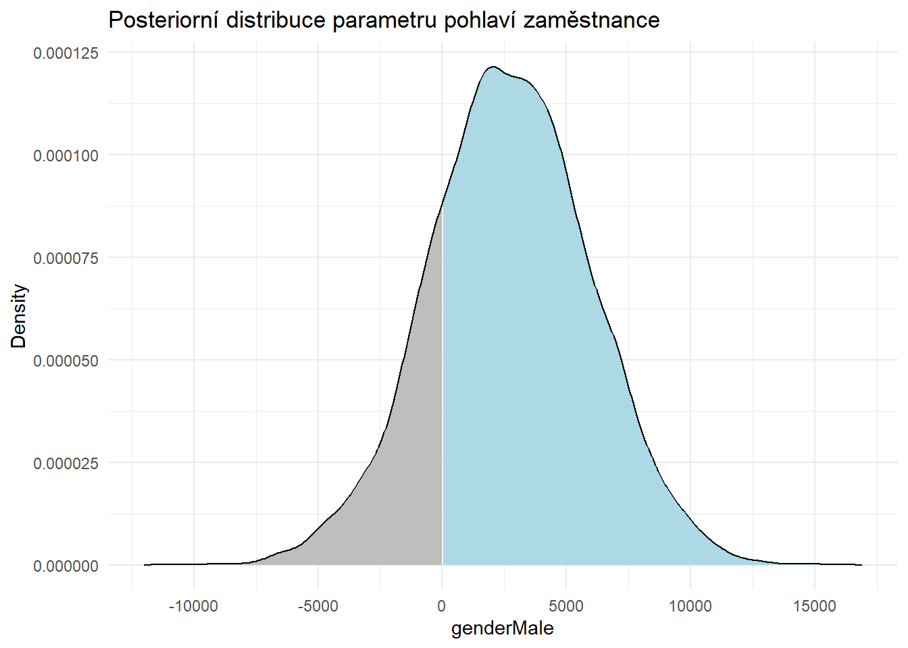

Platová nerovnost mezi muži a ženami není pro firmy jen záležitostí etickou a právní, ale také marketingovou - může mít totiž negativní dopad na jejich “employer brand” a atraktivitu coby zaměstnavatele. To znamená, že pokud firmy chtějí přilákat a také si udržet talentované zaměstnance, musí být schopny zajistit, že se u nich s muži a ženami bude v tomto ohledu zacházet stejně. Prvním krokem k tomu je zjistit, jak velký je rozdíl mezi platy mužů a žen ve firmě a do jaké míry ho lze vysvětlit jinými faktory než je samotné pohlaví zaměstnance. V tomto článku demonstruji, jak takovou analýzu provést s pomocí analytického nástroje R a dat, která má většina firem běžně k dispozici. Stručně se zmiňuji rovněž o tom, jaké mohou být případné další kroky a doporučení vyplývající z výsledků provedné analýzy.
Gender pay gap (GPG), v překladu genderová příjmová nerovnost nebo příjmová propast mezi muži a ženami, označuje typický rozdíl mezi platovým ohodnocením pracujících žen a mužů. Obvykle je GPG vyjadřována procenty, poměrem typické hrubé hodinové (či roční) mzdy ženy k typické mzdě muže nebo poměrem rozdílu mezi typickou mzdou mužů a žen vůči typické mzdě mužů.
Bez ohledu na způsob měření GPG, je dobře doloženým faktem, že ženy jsou obecně hůře placeny než muži, jakkoli se tento rozdíl postupem času zmenšuje. Rozdíly v platech se přitom mohou v jednotlivých zemích poměrně dost lišit. Názorně to ilustruje níže uvedený graf, který ukazuje vývoj (neadjustované) GPG (definované jako poměr rozdílu mediánové mzdy zaměstnaných mužů a žen a mediánové mzdy zaměstnaných mužů) v průběhu několika minulých let v zemích OECD.
Důvodů pro nevyváženost příjmů žen a mužů pravděpodobně existuje větší množství. Mezi nejčastěji uváděné důvody patří:
V situaci, kdy při reportování GPG nerozlišujeme mezi různými důvody pro platovou nerovnost, hovoříme o tzv. neadjustované GPG. Pro potřeby firemního auditu platové nerovnosti je však důležité zjistit rovněž tzv. adjustovanou GPG, která se snaží vyjádřit míru platové nerovnosti, která je způsobena čistě pohlavím zaměstnance. Zatímco adjustovaná GPG umožňuje firmě identifikovat možnou diskriminaci na pracovišti, neadjustovaná GPG (při neprokázané adjustované GPG) může poukazovat na existenci problémů jako jsou genderové stereotypy či nedostatečná podpora žen při snaze skloubit svůj osobní a profesní život. Pro firmy je tak užitečné sledovat oba ukazatele.
I kdybychom odhlédli od etických či právních aspektů platové nerovnosti mezi muži a ženami, je ve velice pragmatickém zájmu každé firmy, aby se tento druh nespravedlnosti v jejím systému odměňování nevyskytoval. V době sociálních sítí a platforem na hodnocení firem jejich současnými i bývalými zaměstnanci (za všechny zmiňme např. Glassdoor nebo český Atmoskop) se totiž informace o nerovném přístupu může velice snadno rozšířit mezi potenciální i stávající zaměstnance, kteří ji mohou zohlednit při svém rozhodování, zda se v dané firmě ucházet o práci, resp. zda v ní i nadále zůstat.
Tuto skutečnost dokládají např. výsledky průzkumu provedeného společností Glassdoor, podle kterého cca 67 % (U.S.) zaměstnanců by se neucházelo o práci tam, kde by si myslelo, že muži a ženy mají nerovné platové podmínky.
Stejně jako při řešení jakéhokoli jiného problému, i v tomto případě platí, že v první řadě je především potřeba ověřit, že nějaký problém k řešení vůbec existuje. K tomu poslouží firemní audit platové nerovnosti mezi muži a ženami. Ten prostřednictvím analýzy platových, demografických a organizačních dat ověří, zda máme nějaké doklady pro to, že v dané společnosti existují platové rozdíly mezi zaměstnanci spojené s jejich pohlavím. Teprve na základě výsledků takové analýzy je možné se začít poohlížet po možných opatřeních v oblastech náboru, odměňování a/nebo povyšování, která by mohla pomoct nespravedlivé platové nerovnosti odstranit nebo alespoň zmírnit.
Níže uvedený příklad takového auditu vychází z článku How to Analyze Your Gender Pay Gap: An Employer’s Guide od Andrew Chamberlaina, Ph.D., hlavního ekonoma a vedoucího výzkumu ve společnosti Glassdoor.
Analýzu platové nerovnosti mezi muži a ženami provedeme v následujících několika krocích:
K dispozici máme následující data ke vzorku 1000 zaměstnanců:
Ze zběžné kontroly povahy našich dat je patrné, že ne každá z proměnných je v našem datasetu reprezentována pomocí adekvátního datového typu. Před samotnou analýzou si tedy budeme muset naše data ještě trochu upravit.
Rows: 1,000
Columns: 9
$ jobTitle <chr> "Graphic Designer", "Software Engineer", "Warehous~
$ gender <chr> "Female", "Male", "Female", "Male", "Male", "Femal~
$ age <dbl> 18, 21, 19, 20, 26, 20, 20, 18, 33, 35, 24, 18, 19~
$ perfEval <dbl> 5, 5, 4, 5, 5, 5, 5, 4, 5, 5, 5, 5, 5, 5, 5, 5, 5,~
$ edu <chr> "College", "College", "PhD", "Masters", "Masters",~
$ dept <chr> "Operations", "Management", "Administration", "Sal~
$ seniority <dbl> 2, 5, 5, 4, 5, 4, 4, 5, 5, 5, 5, 3, 3, 5, 4, 3, 5,~
$ basePay <dbl> 42363, 108476, 90208, 108080, 99464, 70890, 67585,~
$ bonus <dbl> 9938, 11128, 9268, 10154, 9319, 10126, 10541, 1024~Konkrétně budeme chtít upravit všechny textové proměnné (pracovní pozice, pohlaví, úroveň vzdělání a pracovní oddělení) a dvě numerické proměnné (hodnocení pracovního výkonu a míru seniority) na faktorové proměnné. Ke třem z těchto nově vytvořených faktorových proměnných (úroveň vzdělání, hodnocení pracovního výkonu a míra senirotity) je potom potřeba přidat informaci o správném pořadí jejich jednotlivých kategorií, protože reprezentují ordinální proměnné, u kterých lze smysluplně hovořit o relativním pořadí kategorií ve smyslu vyšší/nižší, resp. větší/menší. Takto upravená data již odpovídají typu informací, které reprezentují, a můžeme je tedy začít používat pro analýzu našeho problému.
mydata <- data %>%
dplyr::mutate_if(is.character, as.factor) %>%
dplyr::mutate(edu = factor(edu, ordered = TRUE, levels = c("High School", "College", "Masters", "PhD")),
perfEval = factor(as.character(perfEval), ordered = TRUE, levels = c("1","2","3","4","5")),
seniority = factor(as.character(seniority), ordered = TRUE, levels = c("1","2","3","4","5")))
V níže uvedených tabulkách jsou uvedeny základní popisné statistiky k jednotlivým proměnným. Můžeme z nich vyčíst např. to, že našich 1000 zaměstnanců je relativně rovnoměně rozdělených do jednotlivých kategorií z hlediska pracovní pozice, pohlaví, hodnocení pracovního výkonu, úrovně vzdělání, oddělení, ve kterém pracují, i míry jejich seniority. Dále se z nich můžeme dozvědět, že prostředních 50 % zaměstnanců je ve věku mezi 29 a 54 lety, jejich roční základní mzda se pohybuje od 76 850 do 111 558 USD a jejich bonusy za rok činí 4 849 až 8 026 USD.
| Name | mydata |
| Number of rows | 1000 |
| Number of columns | 9 |
| _______________________ | |
| Column type frequency: | |
| factor | 6 |
| numeric | 3 |
| ________________________ | |
| Group variables | None |
Variable type: factor
| skim_variable | n_missing | complete_rate | ordered | n_unique | top_counts |
|---|---|---|---|---|---|
| jobTitle | 0 | 1 | FALSE | 10 | Mar: 118, Sof: 109, Dat: 107, Fin: 107 |
| gender | 0 | 1 | FALSE | 2 | Mal: 532, Fem: 468 |
| perfEval | 0 | 1 | TRUE | 5 | 5: 209, 4: 207, 1: 198, 3: 194 |
| edu | 0 | 1 | TRUE | 4 | Hig: 265, Mas: 256, Col: 241, PhD: 238 |
| dept | 0 | 1 | FALSE | 5 | Ope: 210, Sal: 207, Man: 198, Adm: 193 |
| seniority | 0 | 1 | TRUE | 5 | 3: 219, 2: 209, 1: 195, 5: 193 |
Variable type: numeric
| skim_variable | n_missing | complete_rate | mean | sd | p0 | p25 | p50 | p75 | p100 | hist |
|---|---|---|---|---|---|---|---|---|---|---|
| age | 0 | 1 | 41.39 | 14.29 | 18 | 29.00 | 41.0 | 54.25 | 65 | ▇▇▆▆▇ |
| basePay | 0 | 1 | 94472.65 | 25337.49 | 34208 | 76850.25 | 93327.5 | 111558.00 | 179726 | ▂▇▇▃▁ |
| bonus | 0 | 1 | 6467.16 | 2004.38 | 1703 | 4849.50 | 6507.0 | 8026.00 | 11293 | ▂▇▇▆▂ |
Z hlediska námi analyzovaného problému jsou pro nás ale důležitější vztahy mezi jednotlivými proměnnými, zejména mezi pohlavím a ostatními proměnnými a jejich různými kombinacemi. Rychlý přehled o některých těchto vztazích nám může poskytnout níže uvedený graf, který zobrazuje souvislosti mezi jednotlivými dvojicemi proměnných a s pomocí barevného kódování navíc nese informaci o tom, jak se tyto souvislosti liší mezi pohlavími. V grafu můžeme např. vidět, že se v případě některých pracovních pozic významně liší relativní zastoupení mužů a žen. V menší míře se zdá tento rozdíl platit i v případě úrovně vzdělání. Určitý rozdíl mezi muži a ženami se zdá existovat rovněž ve výši jejich základní mzdy (narozdíl od bonusové složky, která se zdá být u mužů a žen obdobně vysoká).
Vizuální dojem o rozdílné výši základní mzdy u mužů a žen potvrzuje i detailnější analýza tohoto rozdílu. Ta ukazuje, že v našem vzorku mediánová mzda žen činí 89913.5 USD a mediánová mzda mužů 98223 USD. To odpovídá rozdílu 8309.5 USD, resp. neadjustované GPG (definované jako poměr rozdílu mediánové mzdy mužů a žen a mediánové mzdy mužů) 8.5 %. Míra platové nerovnosti se tak v námi sledované firmě zdá být spíše nižší, srovnatelná s celkovou hodnotou tohoto ukazatele v zemích jako je např. Švédsko nebo Nový Zéland (viz graf z úvodu tohoto článku).
Pokud bychom chtěli zohlednit míru naší nejistoty při odhadu velikosti rozdílu mezi typickým platem mužů a žen, která je daná tím, že pracujeme pouze se vzorkem zaměstnanců a nikoli s celou firmou, měli bychom sáhnout po inferenční statistice. Při použití bayesovského ekvivalentu t-testu pro dva nezávislé výběry získáme takto informaci o posteriorní distribuci velikosti tohoto rozdílu. Na grafu níže můžeme vidět, že 95% interval kredibility se nachází v rozmezí od 5511 do 11615 USD, s mediánovou hodnotou 8392 USD. Z grafu také můžeme vyčíst, že dostupná data mluví silně v neprospěch nulové hypotézy o neexistenci rozdílu mezi průměrným platem mužů a žen - viz velmi nízká hodnota logaritmu Bayesova faktoru ve prospěch nulové hypotézu BF01.
Samotný fakt rozdílné výše základní mzdy u mužů a žen ale ještě nemusí automaticky znamenat, že by se za ním skrývala diskriminace žen. Pozorovaný rozdíl může být totiž např. způsobený tím, že ženy zaměstnané v námi sledované firmě mají typicky nižší vzdělání než ve stejné firmě zaměstnaní muži. A vzhledem k tomu, že výše vzdělání (z hlediska “meritokratické spravedlnosti” zcela neproblematicky) pozitivně koreluje s výší platu, projeví se tato souvislost v nižší typické mzdě žen (ponechme nyní stranou otázku, v jaké míře mají ženy obecně přístup k vyššímu vzdělání ve společnosti, kde daná firma působí). Tuto hypotézu se zdají podporovat i dva níže uvedené grafy, které vizualizují vztah mezi úrovní vzdělání zaměstnance a výší jeho základní mzdy, resp. souvislost mezi pohlavím zaměstnance a úrovní jeho vzdělání.
Podobných kombinovaných souvislostí může v našich datech (a v realitě, kterou reprezentují) existovat větší množství. Pokud by čtenář chtěl vztahy mezi různými kombinacemi proměnných prozkoumat sám a detailněji, může za tímto účelem využít tuto interaktivní aplikaci, kde jsou nahraná naše data a kde lze snadno různým způsobem vizualizovat zadané kombinace proměnných. Viz níže uvedená ukázka využití této aplikace při vizualizaci vztahu mezi výší platu, pohlavím a pracovní pozicí, včetně počtu zaměstnanců v jednotlivých kombinovaných kategoriích. Z tohoto konkrétního grafu je dobře patrné, že ženy jsou ve srovnání s muži disproporčně méně zastoupeny na dvou nadprůměrně odměňovaných pozicích Manager a Software Engineer a naopak disproporčně více jsou zastoupeny na podprůměrně platově ohodnocené pozici Marketing Associate.
Důležitou kategorií vztahů mezi proměnnými, kterou bychom měli prozkoumat, pokud se chceme co nejblíže dostat k příčinám pozorovaných nerovností v platech mužů a žen a dobře zacílit případné intervence, jsou tzv. interakce. Ty popisují situace, kdy vztah mezi dvěma proměnnými závisí na hodnotě nějaké třetí proměnné. Nás zde bude konkrétně zajímat interakce mezi naší hlavní nezávislou proměnnou (prediktorem), tj. pohlavím zaměstnance, a dalšími nezávislými proměnnými (např. věkem, úrovní vzdělání, hodnocením pracovního výkonu, pracovní pozicí nebo oddělením) ve vztahu k naší závislé proměnné (kritériu), tedy základní mzdě.
Příkladem vizualizace tohoto druhu vztahu mezi proměnnými je níže uvedený graf, ze kterého můžeme vyčíst, že ženy mají sice v průměru nižší základní mzdu než muži napříč celým věkovým spektrem (viz níže položená regresní přímka pro skupinu žen), ale fakt, že zobrazené regresní přímky jsou rovnoběžné, svědčí pro to, že v rámci obou skupin platí stejný typ vztahu mezi věkem a výší platu, a tedy že mezi pohlavím a věkem ve vztahu k výši mzdy nedochází k žádné interakci. Pokud by se existence takové interakce potvrdila i při zohlednění dalších relevantních faktorů, mělo by to pro nás být podnětem k další exploraci toho, co se pozorovaným rozdílem skrývá.
Abychom dokázali izolovat vliv samotného pohlaví zaměstnanců na výši platu a zohlednit přitom zároveň vliv všech ostatních relevantních faktorů, včetně některých jejich interakcí, musíme sáhnout po komplexnějším nástroji než je popisná statistika. A tímto nástrojem je statistické modelování.
Statistické modelování, podobně jako jakékoli jiné modelování ve vědě, ale i v běžném životě, není ničím jiným než snahou vytvořit menší a zjednodušený model našeho světa, který však jeho chování odráží dostatečně věrně na to, abychom s jeho pomocí mohli činit úsudky a předpovědi o skutečném světě a zakládat na něm svá rozhodnutí (k tomuto tématu viz srozumitelně napsaný popularizující článek Modeluji, tedy jsem od Josefa Šlerky). Statistické modelování se potom od jiných druhů modelování liší v tom, že se ve větší míře opírá o nástroje matematické statistiky a teorie pravděpodobnosti.
Překvapivě mnoho jevů našeho světa se dá úspěšně modelovat a předpovídat pomocí relativně jednoduchých statistických modelů zobecněné lineární regrese (Generalized Linear Models, GLM). Ty předpokládají, že závislá proměnná, transformovaná prostřednictvím tzv. linkovací funkce (link function), je funkcí lineární kombinace nezávislých proměnných. Nejznámější z této rodiny statistických modelů je klasický lineární model, který předpokládá normální rozdělení závislé proměnné, resp. reziduí (chyb) okolo predikované/ očekávané střední hodnoty závislé proměnné (viz ilustrativní obrázek níže).
Vzhledem k tomu, že námi modelovaná proměnná základní mzdy se zdá mít normální, nebo téměř normální rozdělení (viz některé grafy v části věnované explorační analýze), můžeme i my sáhnout po tomto statistickém modelu. Jako nezávislé proměnné v našem modelu použijeme všechny nám dostupné prediktory, spolu s interakcemi mezi proměnnou pohlaví na straně jedné a proměnnými úrovně vzdělání, seniority, věku a hodnocení pracovního výkonu na straně druhé. Protože zaměstnanci tvoří přirozené shluky v rámci oddělení, napříč kterými se liší výše mzdy a také by se mohla lišit povaha vztahu mezi pohlavím zaměstnance a výší jeho mzdy, použijeme hierarchickou/víceúrovňovou variantu modelu lineární regrese, která umožňuje, aby hodnoty vybraných parametrů modelu variovaly v závilosti na příslušnosti zaměstnanců do konkrétního oddělení.
K odhadu hodnot parametrů našeho modelu použijeme inferenční rámec bayesovské statistiky, která ve srovnání s frekventistickou statistikou nabízí bohatší a intuitivně snáze uchopitelné výstupy. Pro apriorní distribuci parametrů modelu použijeme defaultní, široké a neinformativní hodnoty, takže výsledky analýzy budou nominálně podobné těm, které bychom získali při použití tradičnější frekventistické inferenční statistiky.
# defining and running the model
model <- brms::brm(
basePay | trunc(lb = 0)
~ 1
+ jobTitle
+ gender
+ age
+ perfEval
+ edu
+ seniority
+ gender:edu
+ gender:seniority
+ gender:age
+ gender:perfEval
+ (1 + gender | dept),
data = mydata %>% dplyr::mutate_if(is.factor, as.character),
family = gaussian(link = "identity"),
iter = 3000,
chains = 3,
cores = 6,
warmup = 1000,
seed = 2809,
control = list(
adapt_delta = 0.99,
max_treedepth = 20
)
)
Dříve než přistoupíme k interpretaci výsledků analýzy je dobré si ověřit, že náš statistický model dokáže dostatečně věrně napodobit či simulovat data reprezentující firemní realitu, na jejíž vlastnosti chceme s pomocí tohoto modelu usuzovat. Za tímto účelem můžeme použít nástroj posteriorní prediktivní kontroly (posterior predictive check), který ověřuje, jak moc dobře námi zvolený a odhadnutý model predikuje pozorovaná data na základě vzorku posteriorních hodnot jeho parametrů. Z níže uvedeného grafu je dobře patrné, že náš model si z tohoto hlediska nevede vůbec špatně.
Po této kontrole (a také po ověření dalších technických náležitostí, jako je např. konvergence MCMC řetězců, které umožňují odhadnout posteriorneí distribuci parametrů i komplexnějších statistických modelů jako je ten náš) můžeme začít využívat parametry našeho modelu k usuzování na pravděpodobné vlastnosti námi studované firemní reality.
Níže je uveden souhrn informací o našem odhadnutém modelu. Primárně nás zajímá hodnota parametru pohlaví (genderMale) v sekci věnované efektům na úrovni celé populace (Population-Level Effects). 95% interval kredibility (Credible Interval), který udává kam v posteriorním rozdělení spadá hodnota nepozorovaného parametru s 95% pravděpodobností, se nachází v rozmezí od -3750.04 USD do 9081.92 USD, se střední hodnotou 2717.57. Tzn., že podle našeho modelu má muž - při zohlednění ostatních faktorů a jejich vybraných interakcí - typicky o cca 2700 USD vyšší základní mzdu než její ženský protějšek. Analýza našich dat tak do určité míry podporuje hypotézu o existenci platové diskriminace na základě pohlaví zaměstnance v námi studované firmě. Síla důkazu ve prospěch této hypotézy však není nijak výrazná, což vyplývá z toho, že 95% interval kredibility zahrnuje vedle kladných hodnot i nulovou hodnotu a záporné hodnoty parametru pohlaví jako jeho plauzibilní hodnoty.
Family: gaussian
Links: mu = identity; sigma = identity
Formula: basePay | trunc(lb = 0) ~ 1 + jobTitle + gender + age + perfEval + edu + seniority + gender:edu + gender:seniority + gender:age + gender:perfEval + (1 + gender | dept)
Data: mydata %>% dplyr::mutate_if(is.factor, as.characte (Number of observations: 1000)
Draws: 3 chains, each with iter = 3000; warmup = 1000; thin = 1;
total post-warmup draws = 6000
Group-Level Effects:
~dept (Number of levels: 5)
Estimate Est.Error l-95% CI u-95% CI Rhat
sd(Intercept) 3659.02 2392.77 1181.83 9771.07 1.00
sd(genderMale) 1808.55 1724.07 78.57 6119.45 1.00
cor(Intercept,genderMale) 0.30 0.53 -0.83 0.98 1.00
Bulk_ESS Tail_ESS
sd(Intercept) 2653 2634
sd(genderMale) 3466 3552
cor(Intercept,genderMale) 6333 4308
Population-Level Effects:
Estimate Est.Error l-95% CI u-95% CI
Intercept 29216.96 3175.03 23007.14 35319.81
jobTitleDriver -3633.29 1488.22 -6452.10 -760.74
jobTitleFinancialAnalyst 3749.02 1419.10 1008.10 6517.61
jobTitleGraphicDesigner -2832.43 1454.75 -5687.49 37.72
jobTitleIT -1869.36 1438.48 -4666.71 969.94
jobTitleManager 31411.39 1495.39 28444.26 34352.28
jobTitleMarketingAssociate -16475.88 1390.53 -19181.98 -13758.33
jobTitleSalesAssociate 316.91 1428.70 -2488.94 3110.02
jobTitleSoftwareEngineer 13286.51 1416.67 10487.13 16055.90
jobTitleWarehouseAssociate -1040.96 1491.96 -3955.62 1848.02
genderMale 2717.57 3238.37 -3750.04 9081.92
age 995.31 33.84 927.62 1061.68
perfEval2 246.70 1444.36 -2609.56 3094.73
perfEval3 -1515.48 1463.94 -4327.32 1361.02
perfEval4 183.45 1438.20 -2567.99 3065.99
perfEval5 1433.01 1470.70 -1405.12 4405.58
eduHighSchool -417.81 1302.59 -2969.86 2140.64
eduMasters 4149.49 1321.31 1548.67 6728.00
eduPhD 7627.28 1342.16 5025.37 10270.97
seniority2 8000.31 1527.46 4989.21 10992.21
seniority3 17954.08 1486.71 15132.57 20868.40
seniority4 30596.32 1613.05 27406.56 33680.11
seniority5 39640.70 1530.88 36626.89 42651.21
genderMale:eduHighSchool -1926.51 1868.39 -5590.15 1674.20
genderMale:eduMasters 780.52 1829.37 -2755.04 4346.52
genderMale:eduPhD -3154.41 1842.55 -6757.49 436.31
genderMale:seniority2 898.79 2074.27 -3179.87 4874.13
genderMale:seniority3 -354.32 2018.99 -4315.71 3647.04
genderMale:seniority4 -2847.26 2095.05 -7044.18 1157.86
genderMale:seniority5 -3538.92 2098.61 -7564.69 565.50
genderMale:age 16.69 44.85 -71.88 104.73
genderMale:perfEval2 -603.35 2084.98 -4768.78 3466.38
genderMale:perfEval3 1601.12 2062.41 -2375.63 5640.84
genderMale:perfEval4 -471.22 2020.88 -4447.73 3466.87
genderMale:perfEval5 -2795.97 2013.44 -6768.31 1080.21
Rhat Bulk_ESS Tail_ESS
Intercept 1.00 2311 3592
jobTitleDriver 1.00 3819 4183
jobTitleFinancialAnalyst 1.00 3294 4284
jobTitleGraphicDesigner 1.00 3372 3844
jobTitleIT 1.00 4040 4704
jobTitleManager 1.00 3617 4213
jobTitleMarketingAssociate 1.00 3495 4556
jobTitleSalesAssociate 1.00 3885 4347
jobTitleSoftwareEngineer 1.00 3327 4760
jobTitleWarehouseAssociate 1.00 3601 4249
genderMale 1.00 3031 4168
age 1.00 5997 4475
perfEval2 1.00 4400 3950
perfEval3 1.00 4457 4393
perfEval4 1.00 4276 4384
perfEval5 1.00 4239 4453
eduHighSchool 1.00 4654 4274
eduMasters 1.00 4692 4883
eduPhD 1.00 4686 4832
seniority2 1.00 3890 4236
seniority3 1.00 3995 4891
seniority4 1.00 4234 4872
seniority5 1.00 4092 4550
genderMale:eduHighSchool 1.00 4494 4650
genderMale:eduMasters 1.00 4323 4943
genderMale:eduPhD 1.00 4369 4810
genderMale:seniority2 1.00 3919 4684
genderMale:seniority3 1.00 4535 5116
genderMale:seniority4 1.00 4379 4976
genderMale:seniority5 1.00 4594 4807
genderMale:age 1.00 5968 4280
genderMale:perfEval2 1.00 4211 4414
genderMale:perfEval3 1.00 4106 4449
genderMale:perfEval4 1.00 3960 4438
genderMale:perfEval5 1.00 3865 4221
Family Specific Parameters:
Estimate Est.Error l-95% CI u-95% CI Rhat Bulk_ESS Tail_ESS
sigma 10095.58 236.20 9649.25 10569.40 1.00 10053 4303
Draws were sampled using sampling(NUTS). For each parameter, Bulk_ESS
and Tail_ESS are effective sample size measures, and Rhat is the potential
scale reduction factor on split chains (at convergence, Rhat = 1).Pokud bychom chtěli přesněji vyjadřit míru, s níž naše data v rámci našeho modelu favorizují hodnoty parametru pohlaví větší než nula (tj. hodnoty, které jsou v souladu s hypotézou o existenci platové diskriminace na základě pohlaví v neprospěch žen), můžeme se podívat na posteriorní distribuci tohoto parametru a jednoduše na něm spočítat, s jakou pravděpodobností nabývá kladných hodnot.

Po provedení tohoto výpočtu nám vychází hodnota 80 %. To je v souladu s předchozím tvrzením, že důkaz ve prospěch testované hypotézy není příliš silný. Další možností by bylo použití tzv. Bayesova faktoru, který vyjadřuje míru s níž dostupná data favorizují testovanou hypotézu ve srovnání s modelem odpovídajícím nulové hypotéze. Ten má pro naši hypotézu hodnotu 4, což odpovídá významnému, ale zdaleka nikoli silnému či rozhodnému důkazu ve prospěch naší hypotézy.
Vedle parametru pohlaví může být pro nás potenciálně užitečné podívat se také na vztah základní mzdy a ostatních prediktorů použitých v našem modelu. Za tímto účelem můžeme použít vizualizaci podmíněných efektů jednotlivých prediktorů, které vyjadřují vztah mezi prediktorem a kritériem při zohlednění vlivu ostatních prediktorů. Takto např. můžeme na jednom z grafů vidět, že vztah mezi úrovní vzdělání a výší základního platu se má tendenci u mužů a žen lišit. Na jiném grafu si můžeme zase všimnout toho, že rozdíl mezi základní mzdou mužů a žen má tendenci narůstat s tím, jak klesá seniorita zaměstnanců. Tyto a další podobné vhledy nám mohou pomoct přiblížit se k důvodům za pozorovanými nerovnostmi v platech mužů a žen.
I v situaci, kdy analýza dat nepodpoří naše podezření na existenci platové diskriminace na základě pohlaví zaměstnance, je stále možné, že za pozorovaným rozdílem v platech mužů a žen jsou jiné faktory, které s pohlavím zaměstance nějak souvisí. Např. skutečnost, že jsou ženy méně reprezentované na lépe placených seniornějších pozicích, by mohla svědčit o tom, že se ženy na pracovišti mohou potýkat s genderovými stereotypy a že při snaze o kariérní postup na lépe placené pozice narážejí na tzv. “skleněný strop“. Pro učinění takového závěru je však zapotřebí získat další data, a to spíše kvalitativní povahy, taková, která sbírá a analyzuje např. organizační či firemní antropologie.
V situaci, kdy máme dostatečně silné důkazy pro to, že se za pozorovanou platovou nerovností mezi muži a ženami skrývají faktory související s pohlavím zaměstnance, je možné začít se poohlížet po možných řešeních. Stejně jako při identifikaci problému, i při hledání způsobu jeho řešení je dobré držet se zásad na důkazech založeného managementu a volit pouze řešení s dostatečně empiricky doloženou účinností, která zároveň dávají smysl ve specifickém kontextu dané firmy.
Užitečný přehled možných akcí, které zaměstnavatelé mohou podniknout s cílem snížit GPG ve své organizaci, vytvořila známá skupina odborníků na behaviorální vědy v rámci tzv. The Behavioral Insights Team, která svého času vznikla pro to, aby britské vládě pomáhala realizovat účinnou politiku založenou na důkazech. V dokumentu s názvem Reducing the gender pay gap and improving gender equality in organisations: Evidence-based actions for employers tato skupina odborníků uvádí několik možných intervencí, které řadí do tří kategorií podle toho, jak dobře je jejich účinnost podložená empirickými důkazy.
Mezi akce s dobře doloženou účinností řadí následující intervence:
Mezi potenciálně slibné akce, které ale vyžadují další důkazy o své účinnosti, řadí následující postupy:
A mezi akce se smíšenými doklady o jejich účinnosti potom řadí následující opatření:
Zde je pro zájemce originální dokument k bližšímu prostudování.
Skript k analýze je k dispozici ke stažení v podobě Jupyter Notebooku na mém GitHub účtu.
For attribution, please cite this work as
Stehlík (2021, May 17). Ludek's Blog About People Analytics: Firemní audit rozdílu mezi platy mužu a žen. Retrieved from https://blog-about-people-analytics.netlify.com/posts/2021-01-29-paygap/
BibTeX citation
@misc{stehlík2021firemní,
author = {Stehlík, Ludek},
title = {Ludek's Blog About People Analytics: Firemní audit rozdílu mezi platy mužu a žen},
url = {https://blog-about-people-analytics.netlify.com/posts/2021-01-29-paygap/},
year = {2021}
}